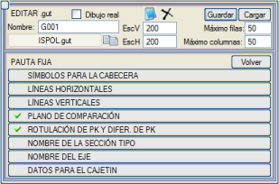
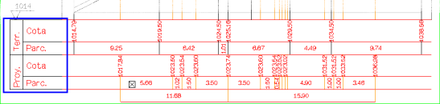
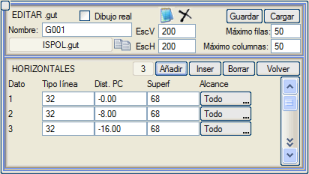
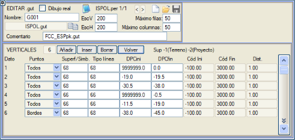
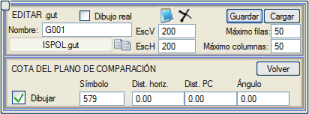
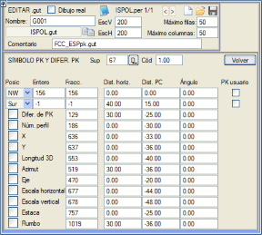

| |
|
ENKESİT PAFTALARI İÇİN ŞABLONLAR: SABİT KILAVUZ ÇİZGİLERİ
|
Burada, temel dekorasyon unsurları, başlıklar, yatay ve dikey çizgi gridleri vb. gibi tüm enkesitlere uygulanabilir genel parametreler açıklanmaktadır. Başlık için Semboller
Yatay Çizgiler Dikey Çizgiler Karşılaştırma Düzlemi KM ve KM Farklarının Etiketlenmesi Tip Kesit Adı Paftadaki Güzergah Adı Antet için Veriler Başlık için Semboller  Burada, bilgi bandı (gitar) için hangi başlıkların kullanılacağı belirtilir; genellikle her satırda gösterilecek veri türünü bildiren etiketli tablosal semboller. Bilgi bandının soluna ve/veya sağına bir başlık yerleştirilebilir. Burada, bilgi bandı (gitar) için hangi başlıkların kullanılacağı belirtilir; genellikle her satırda gösterilecek veri türünü bildiren etiketli tablosal semboller. Bilgi bandının soluna ve/veya sağına bir başlık yerleştirilebilir. Ayrıca, sembolün bağlantı noktasının karşılaştırma düzlemine göre dikey bir mesafesi ve isteğe bağlı olarak bir yatay öteleme ve bir açı belirtilmelidir. 
Bazen başlıklar, lejantlardan veya diğer yardımcı bilgilerden oluşur. Yatay Çizgiler Burada, bilgi bandı gridinin yatay çizgileri tanımlanır. Her bir tekil çizgi için tipini ve karşılaştırma düzlemine olan mesafesini belirtmek gerekir. Tipin negatif bir değerle belirtilmesi, ilgili çizginin gösterilmemesine neden olur. 
Her çizginin uzunluğu (kapsamı) tüm bilgi bandı olabilir veya sadece enkesitte belirli bir yüzey varken olabilir. Dikey Çizgiler Dikey çizgilerin çizimi daha fazla olasılık sunar, ancak bunlar da belirli yüzeylerle ilişkilidir. 
Dikey çizgileri oluşturacak yüzeylerin noktaları şunlara göre filtrelenebilir:
Yüzey olarak -1 belirtilirse, o zaman mevcut taşıt yolu yüzeyi (106) kullanılır ve bitkisel toprak (104) veya sağlam zemin (66) ile tamamlanır. Belirtilen değer -2 ise, taşıt yolu yüzeyi (67) kazı (68) ve uygun olmayan arazideki yarma (69) ile tamamlanır. Karşılaştırma Düzlemi Buradan, karşılaştırma düzleminin gösterilip gösterilmeyeceği ve gösterilecekse hangi sembolle, yerleştirme noktasının yatay ve/veya dikey ötelenmesi ve açısıyla belirtilir. 
KM ve KM Farklarının Etiketlenmesi Her enkesitin KM'sinin nasıl ve nerede etiketleneceği burada belirtilir. KM etiketinin konumu, alt ortada (Güney), sol üst köşede (KB), sol alt köşede (GB), sağ üst köşede (KD), sağ alt köşede (GD), bir koda (Kod) göre, bir pafta köşesinde (pafta) veya üst ortada (Kuzey) olabilir. Gösterilecek KM, hem başlangıca göre (varsayılan) hem de KM eşitlikleri beyan edildiğinde program tarafından hesaplanan kullanıcı KM'si olabilir. KM'lerin etiketlenmesi için kullanılacak iki sembol tipi belirtilir; biri tam sayı, diğeri kesirli KM'ler için kullanılır. Negatif tipler etiketlenmemesine neden olur. KM'nin yanı sıra, buradan şunların da etiketlenmesi belirtilebilir:
Tip Kesit Adı Her enkesitte tip kesitin adını etiketlemeyi sağlar. Bu adlar ENKESİT (ALZADO) → [TİP KESİT, SUBRASANTE] → [ADLAR>>] menüsünde verilir. Bu seçenek aşağıdaki diyalog kutusunu açar  Ayrıca her enkesitte uygulanan tip kesitleri de etiketlenebilir, örneğin: T1 <ST1> C2 D2 Kutuda, tip kesitin adını etiketlemek için kullanılacak metin stili, yatay ve dikey ötelemeler, dönüş açısı, boyut ve metnin yerleştirme noktasına göre yatay ve dikey bağlantıları yapılandırılabilir. Etiketin konumu ile ilgili olarak, alt, sol üst ve sol alt olabilir. Program kütüphanesinde yer alan ISP01st.gut bilgi bandı bu komutu kullanır. Paftadaki Güzergah Adı Güzergah adını, proje adını, güzergah numarasını, her paftanın başlangıç ve bitiş KM'sini, paftanın sol alt köşesine göre belirtilen konumda enkesitlerin her bir sayfasına etiketlemeyi sağlar.  Etiketleme için olası konumlar şunlardır:
Antet için Veriler Burada, her paftanın başlangıç ve bitiş KM'lerini, antetin belirli bir değişken metin alanında ve belirli bir formatta etiketlemeye izin verilir. Antete yazdırılan KM değerlerinin, KM eşitliklerinden türetilen kullanıcı KM'lerine karşılık gelmesi mümkündür.  |